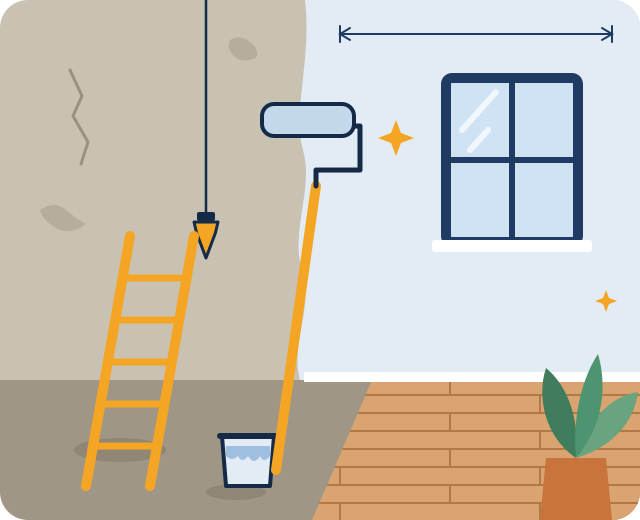
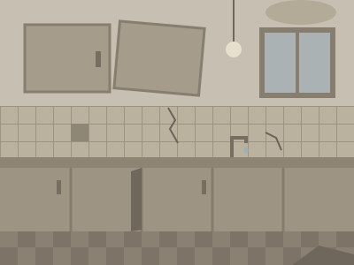
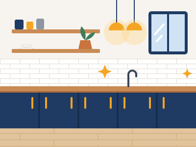
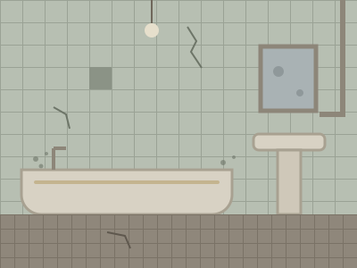
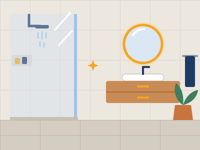
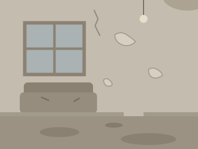
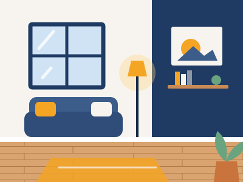

Remodelaciones para casas y departamentos
Tu remodelación, clara de principio a fin.
Cocinas, baños, pisos y terminaciones. Vamos a ver tu espacio, te entregamos un presupuesto por escrito y te mostramos el avance de la obra.
- Presupuesto por escrito: qué incluye y qué no
- Fotos del avance durante la obra
- Una persona a cargo de tu obra

Qué hacemos
Remodelaciones del interior de tu casa o departamento. Si no ves lo que necesitas, pregúntanos.
-
Cocinas
Muebles, cubiertas, revestimientos de muro e iluminación. Partimos por medir y ver cómo usas tu cocina.
-
Baños
Cambio de revestimientos, ducha o tina, mueble de lavamanos y grifería.
-
Pisos y revestimientos
Piso flotante, cerámica o porcelanato, con nivelación previa cuando hace falta.
-
Pintura y terminaciones
Reparación de grietas, preparación de muros, pintura y molduras.
-
Tabiques y cielos rasos
Divisiones livianas para ganar un espacio, e instalación o reparación de cielos rasos.
-
Reparaciones del hogar
Puertas que no cierran, cerámicas sueltas, sellos de ducha y otros arreglos puntuales.
Antes y después
Tres tipos de obra que hacemos seguido, y lo que incluye cada una.
-
Cocina de departamento

Antes 
Después Muebles, cubierta y revestimiento de muro nuevos, e iluminación sobre la cubierta.
-
Baño completo

Antes 
Después La tina se cambió por una ducha, con revestimientos, mueble de lavamanos y espejo nuevos.
-
Living

Antes 
Después Piso de madera nuevo, muros reparados y pintados, y un muro de color.
Ilustraciones de ejemplo. En el sitio de un negocio real, aquí van fotos de sus propias obras, con permiso de cada cliente.
Así trabajamos
Cada paso se conversa antes de avanzar al siguiente.
-
Nos cuentas qué quieres cambiar
Por WhatsApp, con un par de fotos del espacio. Te respondemos para coordinar una visita.
-
Visitamos y medimos
Vemos el espacio, revisamos muros, pisos e instalaciones, y conversamos lo que necesitas.
-
Presupuesto por escrito
Dice qué incluye, qué no incluye, los materiales y un plazo estimado. Nada empieza sin tu aprobación.
-
Obra con avance a la vista
Una persona a cargo te envía fotos del avance y te avisa antes de seguir si aparece algo no previsto.
-
Revisamos juntos y entregamos
Recorremos el trabajo terminado, anotamos los detalles por corregir y los resolvemos antes de cerrar.
¿Tienes un espacio que quieres cambiar?
Mándanos un par de fotos y coordinamos una visita.
Quiénes somos
Plomada es un equipo chico dedicado a remodelaciones de interiores. Hacemos pocas obras a la vez para que cada una tenga a alguien a cargo de principio a fin.
La plomada es la herramienta que se usa para comprobar que un muro está derecho. Nos gusta el nombre porque resume cómo queremos trabajar: con orden y revisando cada paso.
Lo que puedes esperar
- Saber qué incluye y qué no el trabajo, antes de empezar
- Pisos y muebles protegidos durante la obra
- Un solo contacto para todo lo de tu obra
Preguntas frecuentes
¿La visita para cotizar tiene costo?
Depende de la zona y del tipo de trabajo. Te lo decimos por WhatsApp antes de agendar, para que no haya dudas.
¿Cuánto demora una remodelación?
Depende del tamaño y de los materiales. El plazo estimado queda escrito en el presupuesto y, si algo lo cambia, te avisamos antes de seguir.
¿Quién compra los materiales?
Como prefieras: podemos incluirlos en el presupuesto o puedes comprarlos tú con la lista que te entregamos.
¿Trabajan en edificios con reglamento interno?
Sí. Antes de empezar revisamos contigo los horarios permitidos y lo que pide la administración del edificio.
¿Qué pasa si aparece un problema que no se veía?
Paramos, te mostramos con fotos lo que encontramos y te proponemos opciones con su costo. Seguimos solo con tu aprobación.
Conversemos tu proyecto
Escríbenos por WhatsApp con un par de fotos del espacio que quieres cambiar, o llámanos en horario de atención.
- Escribir por WhatsApp ejemplo ¿Quieres un sitio así? Lleva a Hammock AI
- Llamar por teléfono ejemplo ¿Quieres un sitio así? Lleva a Hammock AI
- Escribir un correo ejemplo ¿Quieres un sitio así? Lleva a Hammock AI
Estos botones son de ejemplo: llevan al sitio de Hammock AI. En el sitio de un negocio real abren su WhatsApp, su teléfono y su correo.
Horario de atención
- Lunes a viernes
- 9:00 a 18:00
- Sábado
- 10:00 a 14:00
- Domingo y festivos
- Cerrado
Dónde trabajamos
Trabajamos a domicilio, dentro de la ciudad. No tenemos local de atención al público.